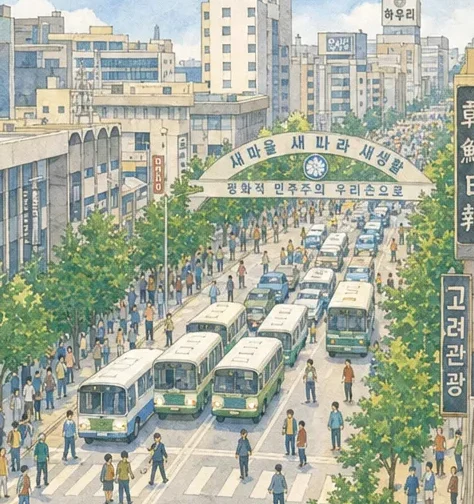
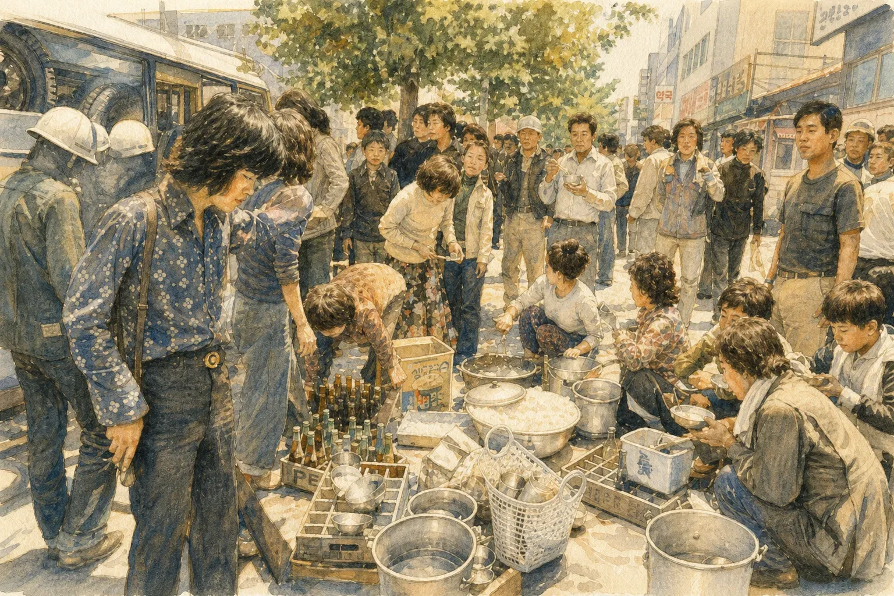

5·18민주화운동을 알아보는 탐구 활동 · 초등 5~6학년
1980년 5월, 광주의 열흘을
기록으로 만나요
오월의 기록 탐험대 · 자료 속 단서를 찾아 5·18의 흐름과 의미를 알아봐요
5월 18일전남대 앞에서 시작
5월 21일계엄군의 집단 발포
5월 27일계엄군의 도청 진압
미션 4개로 5·18을 알아봐요
그림 자료와 쉬운 글을 읽고, 문제를 풀며 스스로 답을 찾아요.

미션 1오월의 시간 찾기
- 오랜 독재와 꺾인 희망
- 학교 앞에서 시작된 열흘
- 함께 맞선 시민들
왜 일어났는지, 열흘이 어떻게 흘러갔는지 알아요.
 미션 2
미션 2기록 속 단서 찾기
- 외로운 섬이 된 광주
- 더는 거짓을 쓸 수 없다
- 세상에 전해진 영상
진실을 알린 기록에서 근거 문장을 찾아요.

미션 3함께한 시민들
- 주먹밥과 헌혈
- 스스로 지킨 질서
- 시민이 만든 신문
시민들의 행동에 담긴 뜻을 생각해요.
 미션 4
미션 4오늘의 민주주의
- '사태'라고 불린 시간
- 이름을 되찾기까지
- 오늘 우리가 이어 갈 것
진실이 밝혀진 과정과 우리의 실천을 생각해요.
이렇게 탐험해요
휴대폰이나 태블릿으로 약 25~30분, 로그인 없이 번호와 별명으로 들어가요.


학생으로 체험하기
QR을 찍고 오월의 기록을 따라가 보세요
교사로 학급방을 만들고, 학생으로 그 학급코드를 넣어 들어가면 함께 체험할 수 있어요.
교사로 체험하기
그림은 실제 사건을 바탕으로 생성형 AI로 제작한 이미지입니다. · 학생은 실명 대신 별명을 써요. 교사 화면은 구글 로그인이 필요해요.